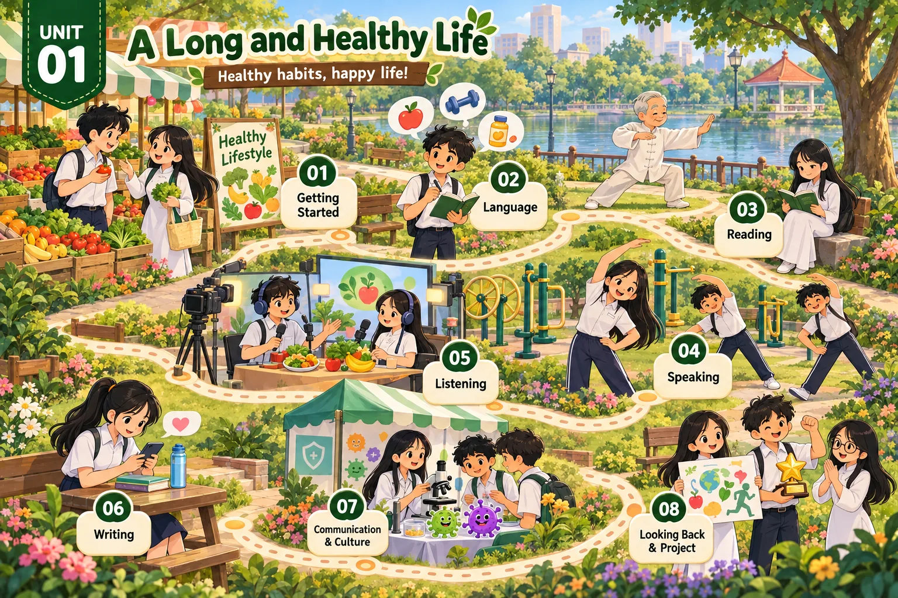

Lesson 1 · Getting started — A healthy lifestyle Lesson 2 · Language Lesson 3 · Reading: Living a long and healthy life Lesson 4 · Speaking: Giving instructions for an exercise routine Lesson 5 · Listening: A TV chat show about food and health Lesson 6 · Writing: A short message Lesson 7 · Communication and Culture / CLIL: Bacteria and viruses Lesson 8 · Looking back and Project: A poster about a healthy habitĐã dựng: Lesson 1, 2, 3, 4, 5, 6, 7, 8. Đủ cả 8 tiết. Dựng xong tiết nào thì mở khoá thẻ đó.